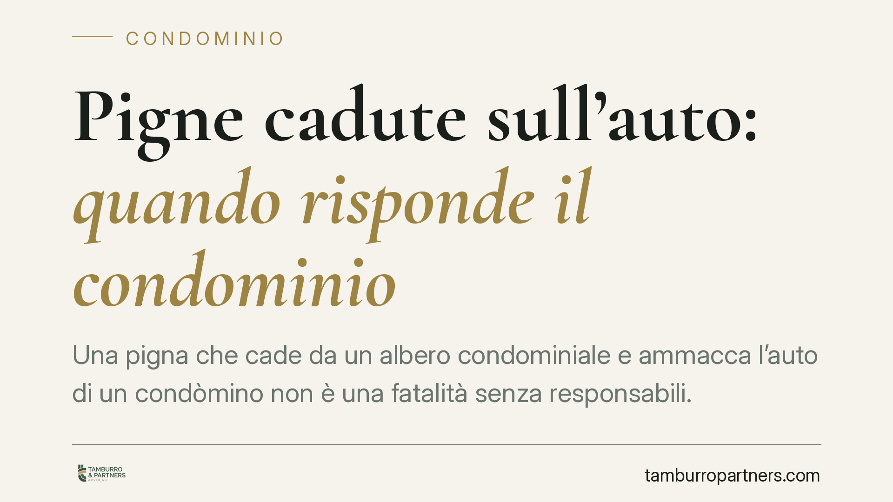

Pigne cadute sull'auto: quando risponde il condominio
Una pigna che cade da un albero condominiale e ammacca l'auto di un condòmino non è una fatalità senza responsabili. Il Giudice di Pace di Napoli, con sentenza del 2 luglio 2026, ha condannato il condominio ai sensi dell'art. 2051 c.c., respingendo per prescrizione la chiamata in garanzia della compagnia assicuratrice. Una pronuncia che chiarisce oneri di custodia e tempi da rispettare.

Il caso deciso a Napoli
Due proprietarie di autovetture parcheggiate nell'area comune subivano danni provocati dalla caduta di pigne dagli alberi di proprietà condominiale. Agivano quindi contro il condominio per ottenere il risarcimento.
Il Giudice di Pace di Napoli, con sentenza n. 8978 del 2 luglio 2026, ha accolto la domanda. Ha riconosciuto la responsabilità del condominio quale custode degli alberi comuni e ha respinto la richiesta di manleva rivolta alla compagnia assicuratrice, perché il diritto era ormai prescritto.
Inquadramento normativo
La decisione ruota attorno all'art. 2051 c.c., che disciplina la cosiddetta responsabilità da custodia: «ciascuno è responsabile del danno cagionato dalle cose che ha in custodia, salvo che provi il caso fortuito». È una responsabilità di tipo oggettivo. Significa che il danneggiato non deve dimostrare la colpa del custode, ma soltanto il nesso tra la cosa (l'albero) e il danno (l'auto ammaccata). Spetta al custode, per liberarsi, provare il caso fortuito, cioè un evento imprevedibile ed eccezionale che ha interrotto quel nesso.
Gli alberi che insistono sull'area comune rientrano tra i beni condominiali. Il condominio ne è custode e risponde quindi dei danni che ne derivano, salvo prova contraria che nel caso non è stata fornita.
Sul fronte assicurativo entra in gioco l'art. 2952 c.c., che fissa in due anni la prescrizione dei diritti derivanti dal contratto di assicurazione. Il termine decorre dal giorno in cui si è verificato il fatto su cui il diritto si fonda. Nel caso napoletano il condominio si è attivato tardi verso la propria compagnia: il diritto alla manleva era già prescritto e la garanzia assicurativa non ha operato.
Implicazioni pratiche
Per l'amministratore e per i condòmini la pronuncia conferma due punti operativi.
Primo: la manutenzione del verde comune non è una scelta discrezionale ma un dovere di custodia. Alberi ad alto fusto, pigne, rami secchi rappresentano fonti di pericolo prevedibili. La mancata potatura o la scarsa vigilanza espongono il condominio a responsabilità oggettiva, difficile da neutralizzare.
Secondo: avere una polizza globale fabbricati non basta se non la si attiva nei tempi. La prescrizione biennale dell'art. 2952 c.c. è breve e non perdona. Un condominio può ritrovarsi condannato a risarcire di tasca propria pur essendo assicurato, semplicemente per non aver denunciato il sinistro alla compagnia entro i termini.
Per il condòmino danneggiato, invece, la sentenza rafforza la posizione: il danno da caduta di elementi vegetali su beni parcheggiati in area comune è risarcibile senza necessità di provare la negligenza dell'ente.
Cosa fare in concreto
- Programmare la manutenzione del verde: pianificate potature periodiche e ispezioni degli alberi ad alto fusto, documentando gli interventi. La tracciabilità è la prima difesa in giudizio.
- Denunciare subito il sinistro alla compagnia: al primo danno, aprite il sinistro senza attendere. Il termine di prescrizione biennale ex art. 2952 c.c. corre rapidamente e la tardività fa perdere la copertura.
- Verificare l'estensione della polizza: controllate che la globale fabbricati copra i danni da caduta di elementi vegetali e da beni comuni a terzi. Se manca, valutate un'integrazione.
- Segnalare le aree a rischio: laddove il parcheggio sia sotto alberi ad alto fusto, valutate segnaletica o riorganizzazione degli stalli per ridurre l'esposizione.
- Conservare la documentazione del danno: chi subisce il danno raccolga foto, testimonianze e, se possibile, verbale, per agevolare la prova del nesso causale.
La vicenda napoletana ricorda che la gestione del condominio non si esaurisce nei bilanci: il controllo dei beni comuni ha ricadute risarcitorie concrete, sia sul piano della responsabilità sia su quello della copertura assicurativa.
---
Contributo informativo a cura di Tamburro & Partners – Avv. Giuseppe Tamburro. Non costituisce parere legale.
Ogni condominio ha una storia a sé.
Se gestisci un'amministrazione e vuoi un confronto su una specifica questione condominiale, scrivi allo studio. Ti rispondiamo entro un giorno lavorativo.